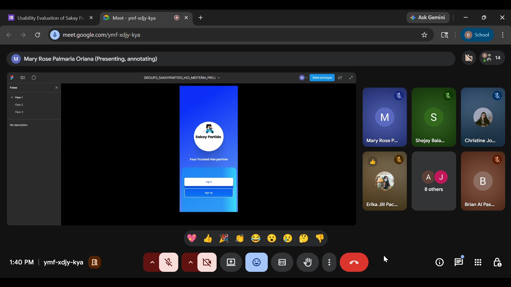
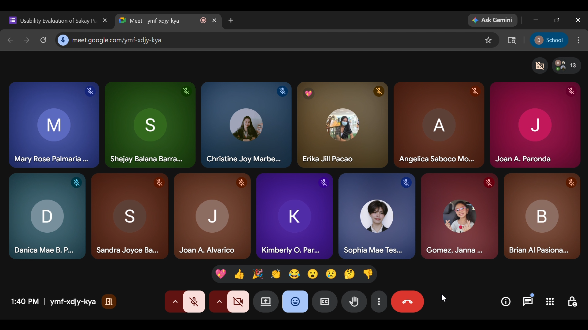
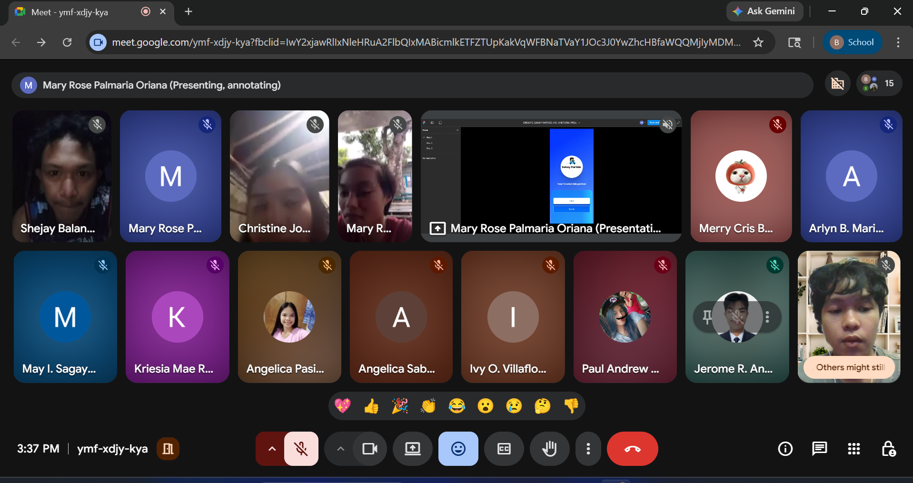
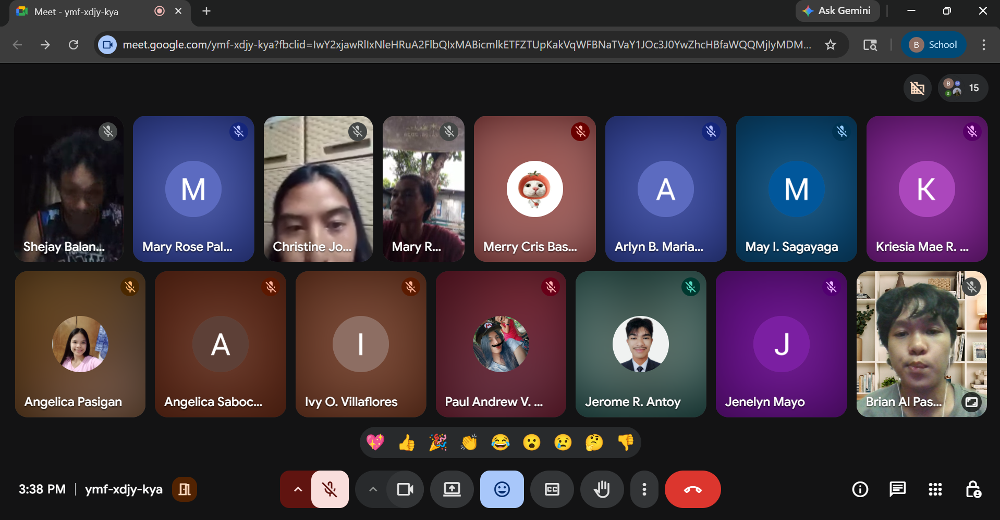

Consent Form
📋 Informed Consent
This study is about the usability evaluation of the Sakay Partido system, a transportation platform designed to help users find an available Motorcycle (door to door) & Tricycle for their ride. You are invited to participate because your feedback is very important in checking if the system is user friendly and easy to use. The goal of this study is to evaluate how well the system works and find ways to improve it based on the user experience while using the system.
If you agree to participate, you will be asked to use the Sakay Partido prototype and answer a short survey questionnaire using the System Usability Scale (SUS). This will help us understand your experience while using the system. The whole process will take about 10 to 15 minutes only.
Your participation in this study is voluntary. You are free to participate or not, and you can also stop at any time without any problem. All the information you provided will be kept private and confidential. Your identity will not be shown or shared with others and your answers will only be used for academic purposes. There will be no risk in participating except for the small amount of time you will spend. Your feedback will help us improve the Sakay Partido system and make it more useful for future users.
By signing below, you confirm voluntary agreement to participate:
Respondents Profile
👤 Who Are Our Respondents?
The respondents of this study are students from Partido State University. We also asked whether they have any experience with similar systems and how frequently they use technology. Most of them are regular commuters who travel daily from their homes to the university using different modes of transportation such as motorcycle and tricycles. Their ages range from 18 to 24 years old, placing them in the young adult group. At this stage, they are active, independent, and often rely on public transportation for their daily activities.
In terms of technology use, the respondents are generally familiar with mobile applications, as smartphones are widely used among students. They are comfortable navigating apps for communication, social media, and transportation-related services. This familiarity makes them suitable users for evaluating systems like Sakay Partido, which aims to improve commuting experiences.
These students experience common commuting challenges such as long waiting times, unclear routes, lack of real-time information, and safety concerns during travel. Their daily exposure to these issues allows them to provide relevant and practical feedback. The respondents represent a group that is both experienced in commuting and capable of using digital solutions, making their insights valuable for improving the system.
Survey Instrument
🔍 Heuristic Evaluation by Group Members
Evaluated system visibility and user control — assessed whether users are always informed about what is happening and if they have sufficient control over system actions.
Focused on UI consistency and design — checked that the interface follows platform conventions and design standards for a cohesive experience.
Checked error prevention and system feedback — identified areas where the system can reduce errors and provide clear, timely feedback to users.
Tested overall usability and efficiency — evaluated the ease with which new and experienced users can accomplish their tasks.
Heuristic Evaluation Documents
SUS Questionnaire
📝 Usability Testing Survey Questionnaire
Participants rated each item from 1 (Strongly Disagree) to 5 (Strongly Agree).
| No. | Question | Strongly Disagree | Disagree | Neutral | Agree | Strongly Agree |
|---|---|---|---|---|---|---|
| 1 | I think that I would like to use this system frequently. | |||||
| 2 | I found the system unnecessarily complex. | |||||
| 3 | I thought the system was easy to use. | |||||
| 4 | I think that I would need the support of a technical person to use this system. | |||||
| 5 | I found the various functions in this system were well integrated. | |||||
| 6 | I thought there was too much inconsistency in this system. | |||||
| 7 | I would imagine that most people would learn to use this system very quickly. | |||||
| 8 | I found the system very cumbersome to use. | |||||
| 9 | I felt very confident using the system. | |||||
| 10 | I needed to learn a lot of things before I could get going with this system. | |||||
| Additional Questions: | ||||||
| 11 |
What did you like about the system? |
|||||
| 12 |
What improvements can you suggest? |
|||||
Documentation
📸 Testing Photos
Below are sample photos taken during the usability testing sessions:



